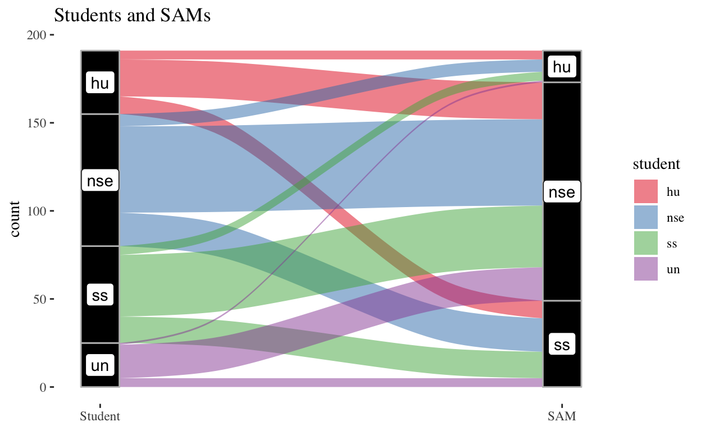

Using alluvial plots and chi-squared tests to see whether the academic division of a specific Student Academic Mentor (SAM) impacts the type of students that reach out to that SAM.
Alluvial plots are by far the most interesting plots I have seen. They are relatively non-traditional, in that it rarely resembles the usual cartesian plots that we see everyday. Personally, I think it is a great escape from the table and charts that bombard our screen everyday, especially in times of the pandemic.
In this project, I am using data collected by the Swarthmore Student Academic Mentor (SAM) program. The goal of the program is to look at the relationship between Swarthmore SAMs and their interactions with students. Furthermore, one possible question that the alluvial plot can help answer is whether the academic division of a specific SAM impacts the type of students that reach out to that SAM. For example, does a SAM who studies in the Social Sciences (SS) have more students from Social Sciences reaching out to them in comparison to Natural Sciences & Engineering (NSE) or Humanities (HU)? We will soon find out!
To set some background, the Swarthmore SAM program consists of a cohort of around 20 student peer leaders that serve as a central points of contact for Swarthmore students. SAMs are trained to provide advice in topics ranging from campus resources, time management, communication, course advising, and much more. Essentially, SAMs are a convenient way for students in the larger Swarthmore community to access the various resources offered by the campus.
Before we begin, the libraries used in this project are as follows:
The Swarthmore SAM Program started collecting more detailed data in regards to how SAMs interact with students. Each entry in the data is a single interaction between a student and a SAM.
Timestamp
"character"
How did you communicate with the student?
"character"
Date of Interaction
"character"
Day of week for interaction
"character"
Time of day
"character"
SAM
"character"
Class year of the student
"character"
Student
"character"
Interaction with Student
"character"
Student's Academic Interests
"character"
What types of questions did you answer or discuss?
"character" The short summary above shows that each interaction records the time, date, SAM, and student information such as academic division and year.
This is a dataset that was copied from the Swarthmore SAMs website. This includes information about the SAMs and their academics interests. This will be important in studying the relationships between SAMs and students with regard to their academic divisions.
Name Year Major Division
"character" "numeric" "character" "character" The SAM Interactions and SAMs datasets will be joined together simply by using sam_interactions <- left_join(sam_interactions, sams, by = c("SAM" = "Name"))
We can think of an alluvial plot as having two axes, a source and a destination. The source in this case are the students, and their destinations that SAMs. We want to group students by division, and see how these students go to the SAMs for advice. Following this model, it is necessary to have the data structured in a way that we have the frequency or count of students in divison X that go to SAMs in division Y. This requires some restructuring of the data.
Since the divisions of students are multi-selection inputs, the “Student’s Academic Interest” field can be filled in with more than one division. The same applies for SAMs. It is not uncommon for students at Swarthmore to have one major in the NSE division and another major/minor in the SS division, or some other combination of divisions. Since this is the case, I thought it was best to create a y/n field for each student division and SAM division. So I added a total of 7 more fields to the data set: student_nse student_ss student_hu student_un sam_nse sam_ss and sam_hu. There are four fields for students, “nse” for Natural Sciences & Engineering, “ss” for Social Sciences, “hu” for Humanities, and “un” for Undecided, each indicated as y or n. Similarly, “sam_div” is y or n if a SAM is studying in a particular division or not.
#joining the data
sam_interactions <- left_join(sam_interactions, sams, by = c("SAM" = "Name"))
#renaming columns for easier manipulation
colnames(sam_interactions) <- c("timestamp","communcation_method", "date", "day", "time", "sam", "student_class_year", "student_status","interaction", "student_division","student_question","sam_year", "sam_major","sam_division")
#creating the additional y/n fields
sam_interactions<-sam_interactions %>%
mutate(student_nse = if_else(grepl("Natural Sciences", student_division, fixed=TRUE), "y", "n")) %>%
mutate(student_ss = if_else(grepl("Social Sciences", student_division, fixed=TRUE), "y", "n")) %>%
mutate(student_hu = if_else(grepl("Humanities", student_division, fixed=TRUE), "y", "n")) %>%
mutate(student_un = if_else(grepl("Undecided", student_division, fixed=TRUE), "y", "n")) %>%
mutate(sam_nse = if_else(grepl("Natural Sciences", sam_division, fixed=TRUE), "y", "n")) %>%
mutate(sam_ss = if_else(grepl("Social Sciences", sam_division, fixed=TRUE), "y", "n")) %>%
mutate(sam_hu = if_else(grepl("Humanities", sam_division, fixed=TRUE), "y", "n"))
By making these “y/n” fields it is possible to apply simple filters and count how many of the interactions fit a specific criterion. For example, the counting for one of the divisions is outlined below. The following code counts the number of NSE students that interacted with SAMs that have majors in the NSE division, the SS division, and the HU division. This may seem like a very tedious way to prepare the data, but it makes the creation of the alluvial plot extremely simple.
student_nse_sam_nse <- sam_interactions %>%
filter(student_nse == "y") %>%
filter(sam_nse == "y") %>%
count()
student_nse_sam_ss <- sam_interactions %>%
filter(student_nse == "y") %>%
filter(sam_ss == "y") %>%
count()
student_nse_sam_hu <- sam_interactions %>%
filter(student_nse == "y") %>%
filter(sam_hu == "y") %>%
count()
After calculating the frequency of each combination (of which there are 12!) we get the following table. This table was made using the DT library, which is very useful in making a quick table that looks really well and has great functionality!
Now comes the most exciting part: creating the plot! The ggalluvial package builds on ggplot and is relatively straightforward for those that have worked with ggplot2. We define the axis1 and axis2 fields as student and sam, since we are looking at the trends of students to SAMs. Then, geom_alluvium takes this along with geom_stratum to construct and format the flow and axes respectively. There are lots of ways to format the colors and labels of this plot by changing the arguments of the fill brewer, stratum, of alluvium!
ggplot(data,
aes(y = count, axis1 = student, axis2 = sam)) +
geom_alluvium(aes(fill = student, width = 1/12))+
geom_stratum(width = 1/12, fill = "black", color = "grey") +
scale_fill_brewer(type = "qual", palette = "Set1") +
geom_label(stat = "stratum", aes(label = after_stat(stratum))) +
scale_x_discrete(limits = c("Student", "SAM"), expand = c(.05, .05)) +
ggtitle("Students and SAMs") +
theme_tufte()

The above plot visually shows that there are larger chunks from each division of students that gravitate towards to the SAMs in the NSE division. However, this should be taken with some caution since the college’s overall student body has more participation in the NSE division than any other division. Because of this, the interactions may be expected to shift in this direction. Additionally, there are 15 SAMs that have academic interests in NSE, and 10 in SS, and 2 in humanities. These numbers may exceed the total number of SAMs because some SAMs are involved in multiple divisions, and thus double counted. Nonetheless, the numbers give an idea of where the SAM and students population stands in terms of the current popularity of the NSE majors.
To get a statistical number on the variation of students for a specific divison, we can run a chi-squared test.
\[\chi^2 = \sum_{set}\frac{(Obs - Exp)^2}{Exp}\]As a start, we are assuming that students in the NSE division choose SAMs in the NSE, SS, or HU divisions at equal rates (the null hypothesis). Since we have 75 students in the NSE division (within the sample), our expected number of NSE students going to each SAM division would be 25. Therefore, our chi-squared value will be 37.44.
\[\chi^2 = \frac{(49 - 25)^2}{25} + \frac{(19 - 25)^2}{25} + \frac{(7 - 25)^2}{25} = 37.44\] Now, to get the p-value, we calculate \(P(\chi^2_{n-1} \ge 37.44) = 1 - P(\chi^2_{n-1} \le 37.44) = 1 - pchisq(37.44, df = 2) \approx 7.4 \times 10^{-9}\). Since the p-value is quite significant, we can reject the null hypothesis that the NSE students seek advice from SAMs at an equal frequency across the divisions.
This same patter is repeated with SS students having a chi-square value of 18.67 and p-value of 8.842698910^{-5}. HU students have a chi-square value of 5.36 and p-value of 0.0685632. Undecided students have a chi-square value of 7.15 and a p-value of 0.0280622. It seems that humanities students are spread out closer to the null hypothesis assumption than the other divisions, meaning that humanities students seem to approach SAMs in different divisions with equally likely frequencies. Depending on the \(\alpha\) cutoff that you prefer, the same may be said for undecided students. However, if we were going by the general \(\alpha < 0.05\) rule, we can also reject the null hypothesis for undecided students and say that they do not seek advice in equal frequencies from SAMs in different divisions.